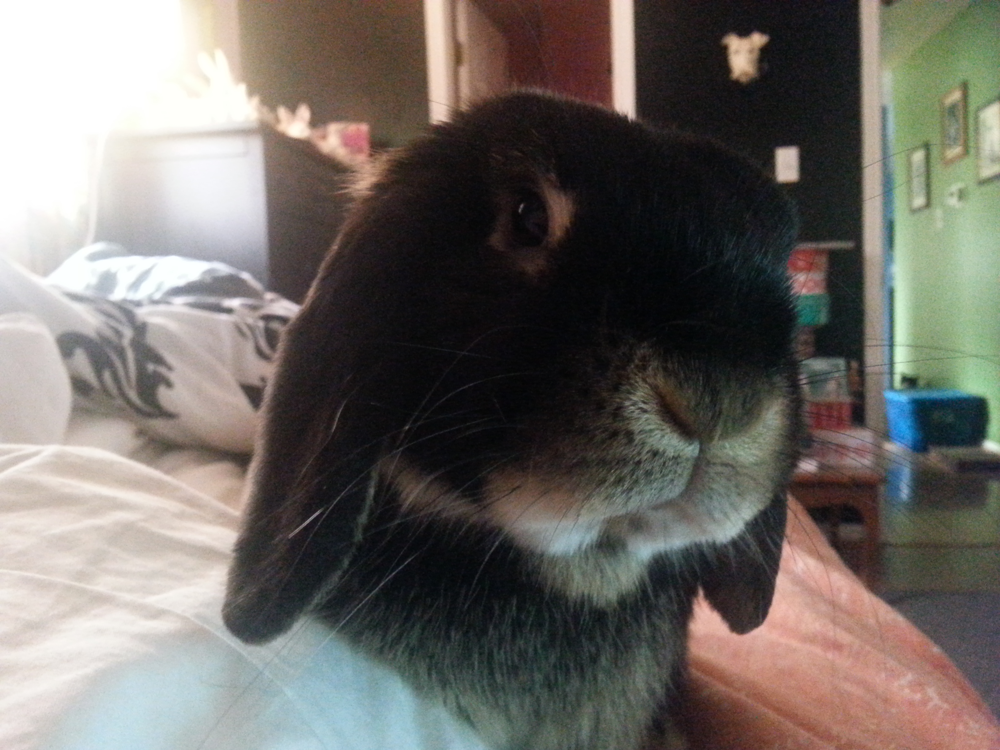

Facts
- A female rabbit is called a doe.
- A male rabbit is called a buck.
- A young rabbit is called a kit (or kitten).
- Rabbits live in groups.
- The European rabbit lives underground, in burrows. A group of burrows is known as a warren.
- More than half of the world’s rabbits live in North America.
- Rabbits have long ears which can be as long as 10 cm (4 in).
- Rabbits have a lifespan of around 10 years.
- Rabbits are herbivores (plant eaters).
- Pet rabbits that live inside are often referred to as ‘house rabbits’.
- Rabbits reproduce very quickly. This can be a major headache for people living in
agricultural areas where rabbits are seen as pests.
- Rabbits are born with their eyes closed and without fur.
Hobby
Rabbits are my hobby. I've had been involved with recuses, protests,
and many events that help ensure the welfare of rabbits. I have two of my own at home,
Joey and Joplin. Named after my some of my musical idols, Joey Ramone and Janis Joplin.
Rabbits have been a major part in my life since high school, finding wild baby rabbits
in my backyard while attempting to nurse them back to health. This proved to be
extremely difficult and scarring in the process. I've quickly grown a fascination
that will stick with me for life.
